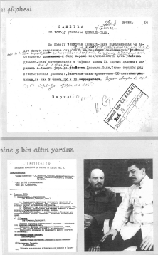

Araştırmacı Mehmet Perinçek, Moskova Arşivindeki çalışmalarında önemli bir belgeyi ortaya çıkarmıştı. Bulduğu sayısız önemli belge arasında 17 Ağustos 1922 ve 23 Kasım 1922 tarihli iki politbüro kararı da yer alıyordu. Kasım toplantısında öldürülen Cemal Paşanın ailesine 5 bin altın yardım kararı vardı. Bu kararda Kamanyev, Kalinin, Lenin, Molotov, Stalin, Zinovyev ve Çiçerin de yer almıştı. (Belgeler Aydınlık Yayınları)